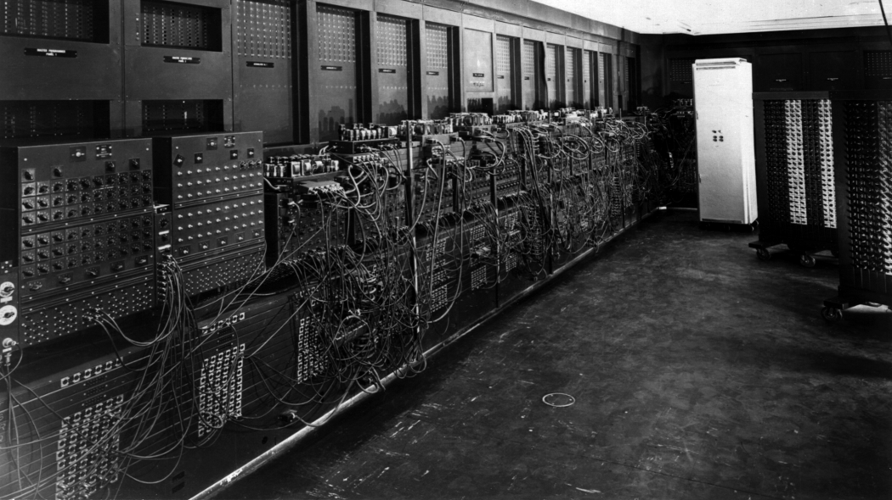
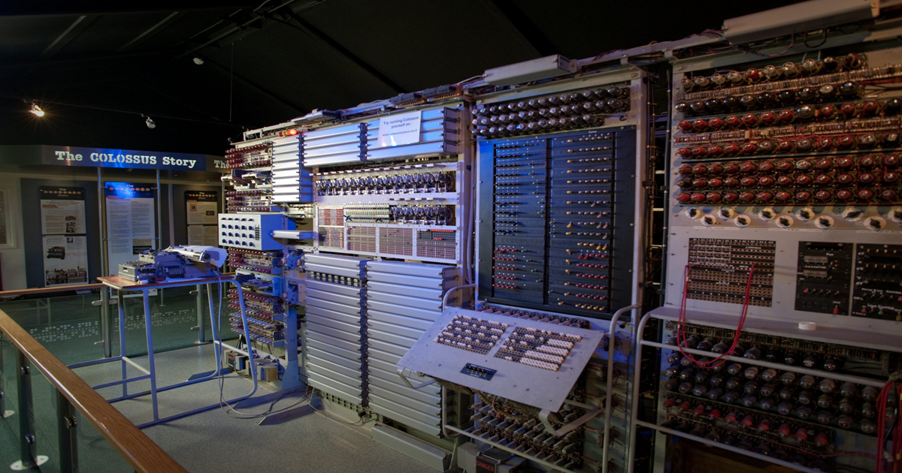
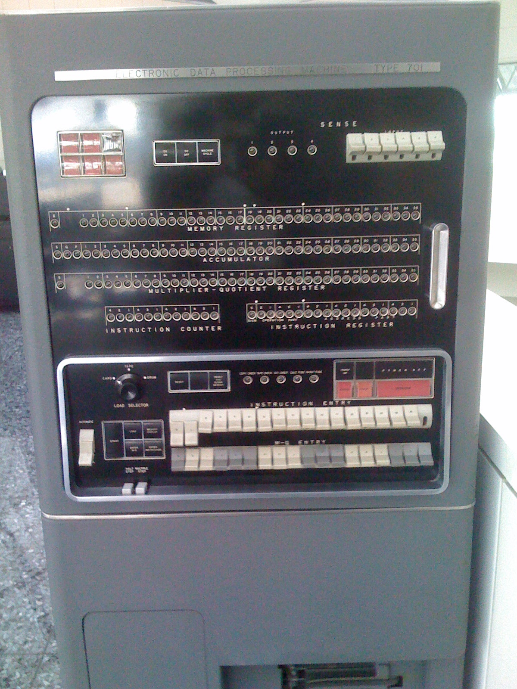

Le Prime Macchine dell'Informatica
Le origini dell'informatica moderna affondano le radici nello sviluppo delle prime macchine calcolatrici. Questi dispositivi pionieristici hanno gettato le basi per la creazione dei computer come li conosciamo oggi.
La Macchina Analitica di Charles Babbage

Progettata nel XIX secolo da Charles Babbage, la macchina analitica è considerata il primo modello teorico di computer programmabile. Nonostante non sia mai stata completata, introduceva concetti rivoluzionari come l’unità di controllo, la memoria e l’uso di istruzioni condizionali, anticipando di oltre un secolo l’architettura dei computer moderni.
ENIAC (1945)
L'ENIAC (Electronic Numerical Integrator and Computer), realizzato negli Stati Uniti nel 1945, fu il primo computer elettronico general-purpose. Con oltre 17.000 valvole termoioniche, occupava una grande sala e rivoluzionò la velocità dei calcoli scientifici e militari dell’epoca.
Z3 di Konrad Zuse (1941)

La Z3, creata da Konrad Zuse in Germania nel 1941, fu il primo computer elettromeccanico completamente funzionante. Utilizzava relè per eseguire operazioni logiche e matematiche, ed è considerata una pietra miliare nello sviluppo della programmazione automatica.
Colossus (1943)
Il Colossus, sviluppato nel Regno Unito durante la Seconda Guerra Mondiale, fu uno dei primi computer elettronici programmabili. La sua funzione principale era la decifrazione dei messaggi criptati tedeschi, contribuendo in modo decisivo agli sforzi bellici degli Alleati.
IBM 701 (1952)
L'IBM 701 fu il primo computer elettronico prodotto in serie da IBM, destinato a uso scientifico e aziendale. Lanciato nel 1952, segnò l’inizio dell’era dei computer commerciali, aprendo la strada alla diffusione dell’informatica nel mondo del lavoro.